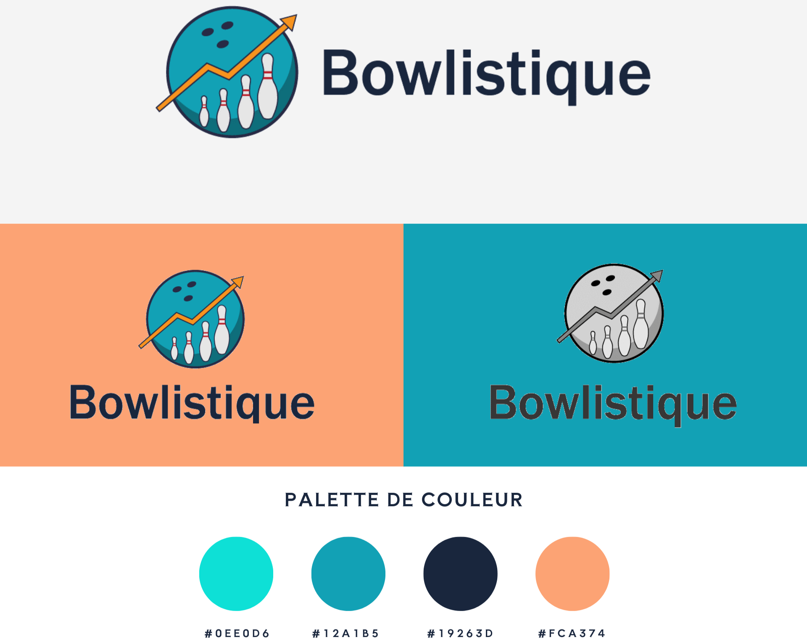

DUMONT Dylan
Développeur web
Passionné par le développement web et les sciences, je suis un développeur sérieux et réfléchi, toujours à la recherche de nouveaux défis pour gagner en compétences.
Voyagez à travers les couleurs et les formes de mon portfolio


A propos de moi
Je m'appelle Dylan, j'ai 19 ans et je suis un étudiant en BUT MMI situé à Elbeuf.
Ma passion pour le Développement Web a commencé au lycée lorsque j'ai appris à coder en Python.
Mon parcours académique m'a permis de développer des compétences approfondies en développement web, conception graphique et communication multimédia.
Mes compétences
Projets
Bowlistique
Développement web
Travail individuel
Sujet : J'ai développé un site web dédié aux passionnés de bowling, leur permettant de suivre et d'analyser leurs performances.
Langages utilisés : HTML, CSS, JavaScript, PHP, MySQL
Ce que j'en retiens : Ce projet m'a offert l'occasion de combiner des compétences techniques et créatives pour concevoir une plateforme complète.
Le résultat final : Présentation de Bowlistique
Spine Skatepark
Graphisme

Travail individuel
Sujet : Création de l’identité d’un skatepark fictif, comprenant un logo, une iconographie, et une maquette de site web "one page".
Logiciels utilisés : Photoshop, Illustrator
Ce que j'en retiens : Cela m'a permis de renforcer mes compétences en graphisme et en conception de maquettes web.
Le résultat final : One page de Spine Skatepark
{kind=link}
Développer sa start-up
Audiovisuel
Travail en groupe
Sujet : Nous avons élaboré une vidéo afin de présenter les points clés pour développer une start-up, illustrée par l'entreprise fictive "GAFELD".
Outils utilisés : Adobe Première Pro, Canva
Ce que j'en retiens : Ce projet met en lumière l'importance de la recherche approfondie et de la présentation claire des idées.
Le résultat final : Présentation du journaliste de GAFELD
EcoQuest
Développement web
Travail en groupe
Sujet : Élaboration d'un site web visant à sensibiliser sur l'impact environnemental, avec un focus sur le développement back-end.
Langages utilisés : PHP, MySQL, HTML, CSS
Ce que j'en retiens : Ce projet a renforcé mes compétences en développement backend et en travail collaboratif.
Le résultat final : Site web Ecoquest
Motion Design
Animation
Travail individuel
Sujet : Création de deux animations : une en 2D représentant E.T. dans une voiture qui vole et une en 3D du générique de Breaking Bad.
Outils utilisés : After Effects, Illustrator
Ce que j'en retiens : Première approche d'After Effects dans différentes utilisations.
Les résultats finaux : Animation de E.T. / Générique de Breaking Bad
Interview
Audiovisuel
Travail en groupe
Sujet : Réalisation d'une vidéo d'interview sur les idées de Didier Raoult, de la prise de vue au montage.
Outil utilisé : Adobe Première Pro
Ce que j'en retiens : Approfondissement des compétences en montage vidéo et en mixage audio.
Le résultat final : Interview complète
Réalisation d'un dashboard
Développement web
Travail individuel
Sujet : Conception et développement d'un tableau de bord interactif pour la gestion des données d'électricité et de gaz de la Creuse.
Langages utilisés : PHP, MySQL, Javascript, Chart.js, HTML, CSS
Ce que j'en retiens : Ce projet m'a permis de renforcer mes compétences en développement back-end et en gestion de base de données.
Le résultat final : Présentation du dashboard
Tonneau
Modélisation 3D
Travail individuel
Sujet : Conception d'un tonneau en 3D sur Blender.
Outil utilisé : Blender
Ce que j'en retiens : Ce projet m'a permis d'améliorer mes compétences en modélisation 3D et en texturing.
Le résultat final : Aperçu du tonneau
Inspecteur Marlowe
Audiovisuel
Travail en groupe
Sujet : Court métrage d'un film noir. Nous devions filmer puis monter individuellement celui-ci.
Outil utilisé : Adobe Première Pro
Ce que j'en retiens : J'ai appris à concevoir un montage sur Première Pro.
Le résultat final : Inspecteur Marlowe
Site web de Foodtruck
Développement web
Travail individuel
Sujet : Dans le cadre d'une situation d'apprentissage évaluée, j'ai élaboré un site web d'un foodtruck fictif. J'ai décidé de le faire sur le thème de la cuisine japonaise moderne.
Langages utilisés : HTML, CSS, JavaScript
Ce que j'en retiens : Il s'agit de ma première réalisation de site web complet. Cela m'a montré l'ampleur d'un projet comme celui-ci, ainsi que des compétences que cela nécessite.
Le résultat final : Site du foodtruck
Affiche Pop Art
Graphisme

Travail individuel
Sujet : Le but était de faire une affiche qui montre la multiplicité des compétences spécifiques à MMI. Pour cela, j'ai réalisé une affiche qui montre les différentes casquettes qu'ont les étudiants en MMI.
Logiciels utilisés : Adobe Illustrator, Adobe Color
Ce que j'en retiens : J'ai pu augmenter mes capacités en graphisme et cela a développé ma créativité.
Le résultat final : Affiche MMI en pop art
{kind=link}
Crescendo
Audiovisuel
Travail en groupe
Sujet : Tournage, montage et création de la musique d'un crescendo reprenant les codes du crescendo de la période constructiviste.
Outils utilisés : Adobe Première Pro, Adobe Audition
Ce que j'en retiens : Ce projet m'a permis de faire ma première musique de vidéo ainsi que de consolider mes compétences en montage.
Le résultat final : Crescendo final